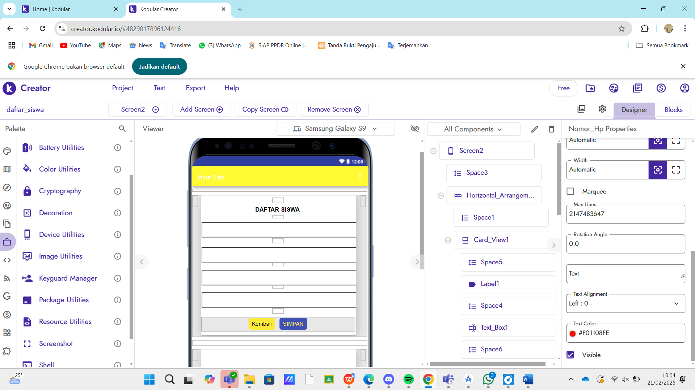
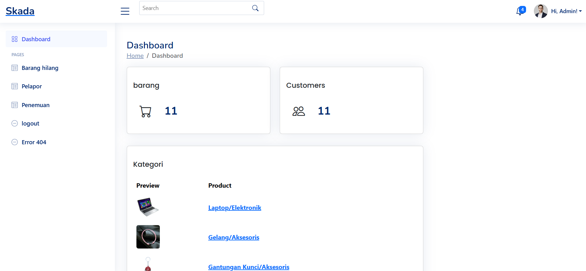
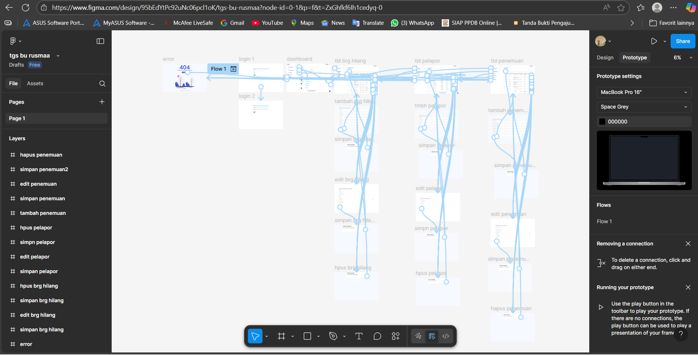
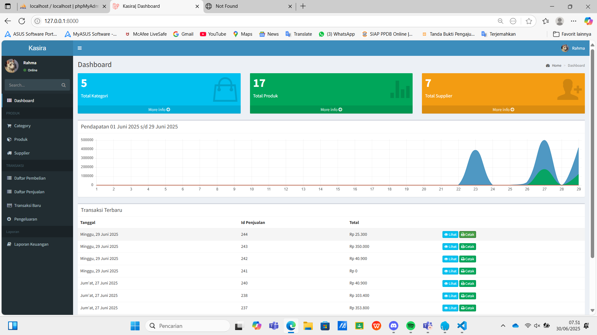
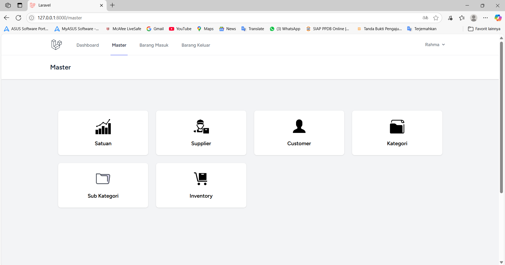

Portofolio
Beberapa project yang pernah saya kerjakan.

Input Data Siswa
Aplikasi ini dibuat menggunakan Kodular sebagai platform pembuat aplikasi tanpa coding yang berbasis drag-and-drop.

Pendataan Barang Hilang
Deskripsi Proyek
Sistem Pendataan Barang Hilang adalah sebuah aplikasi berbasis web yang dirancang
untuk memudahkan pencatatan dan pengelolaan informasi terkait barang yang hilang.

Membangun Solusi Efisien dengan Figma Dalam proyek ini.

Aplikasi POS sederhana berbasis Laravel & Tailwind CSS.

Saya merancang dan mengembangkan Sistem Informasi Barang (SIB) yang efisien, memanfaatkan Laravel untuk backend yang kuat dan Tailwind CSS untuk frontend yang modern.